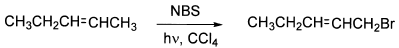
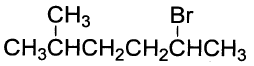
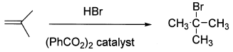
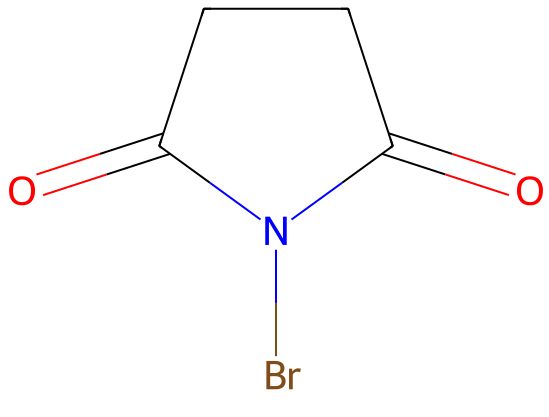
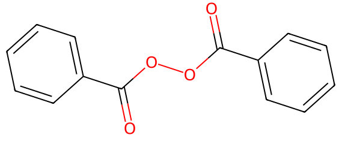

令和5年度 問6 有機化学及び燃料
有機ハロゲン化物の構造と反応に関する次の記述のうち、適切なものはどれか。
①
2－ペンテンを出発物質として、光照射下でN－ブロモスクシンイミド（NBS）を作用させると1－ブロモ－2－ペンテンを選択的に合成することができる。

②
以下の化合物のIUPAC名は5－ブロモ－2－メチルヘキサンである。

③
R－CH＝CH2（R：アルキル基）にNBSを作用させるとアリルラジカルが生成するが、アリルラジカルのスピン密度はアリル基の真ん中の炭素上に局在化している。
④
過酸化物存在下でイソブテンにHBrを作用させると2－ブロモ－2－メチルプロパンが得られる。

⑤
ハロゲン化アルキル中の炭素－ハロゲン（C－X）結合は極性であり、そのためハロゲン化アルキルは双極子モーメントをもち、極性反応においてC－X炭素原子が求電子試薬として機能する。
正答
⑤
1番は臭素化剤臭素化剤として代表的なN-ブロモスクシンイミドを用いた問題です。光照射（もしくはラジカル開始剤）によりNBSから臭素ラジカルが発生し、2－ペンテンの炭素にラジカルを生成する反応です。炭素ラジカルも同様にカルボカチオンと同様に超共役による安定化するため、1級炭素ではなく2級炭素にラジカルがある方が安定化します。そのため生成物は2－ブロモ－2－ペンテンです。この反応はウォール・チーグラー臭素化と呼ばれます。

2番はブロモの数が小さくなるよう命名するため2－ブロモ－5－メチルヘキサンです。
3番のアリルラジカルは二重結合を介して不対電子が非局在化しています。
4番の(PhCO2)2は過酸化ベンゾイルと呼ばれる過酸化物です。熱によってO-O結合が切れラジカル2 molのラジカルが生成できるため反応開始剤として用いられます。まず過酸化ベンゾイルによりHBrから臭素ラジカルが生成し、イソブテンを攻撃します。イソブテンの2重結合部分はそれぞれ炭素－臭素結合とラジカルになります。ラジカルは3級炭素が一番安定するため、生成物は1－ブロモ－2－メチルプロパンです。
